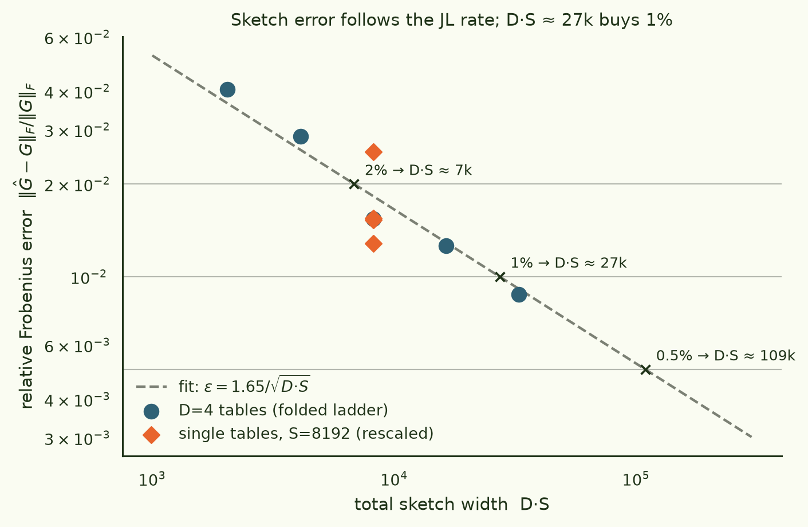

How wide a hash buys a gradient kernel?
We want the N×N similarity matrix of per-token gradients of a language model — every selected token position is one datapoint, its gradient is one row, and the kernel entry Gij = gi⊤diag(q)gj is a inner product in parameter space. The obstruction is size: at Pythia-1.4B scale that's 4.25M rows of 1.4B-dimensional vectors. This pilot built and validated the whole pipeline at Pythia-14M, compressing each gradient on the fly with so the Jacobian never exists in memory — and measured the question in the title. The answer is clean: error = 1.65/√(D·S), so a total sketch width of D·S ≈ 27,000 buys a 1% kernel, independent of the 14M-dimensional ambient space being hashed.
§1The object, and why sketch it
The motivation is Timaeus-style developmental interpretability: their and susceptibility-spectroscopy line computes essentially this kernel over 4.25M Pile token-contexts of Pythia-1.4B by SGLD sampling, at a reported cost of roughly 4,800 H200-hours. To first order, the loss-fluctuation covariance those samplers estimate is a preconditioned gradient Gram matrix — which we can attack directly with explicit gradients if we can store the rows. We can't (4.25M × 1.4B fp32 ≈ 24 PB), so each row is compressed the moment it exists:
- Preconditioner. A frozen diagonal second moment v = 𝔼[g²] estimated once over 256 token gradients; rows are scaled by √q with q = (v+ε)−1 normalized to mean 1. This is Adam/Fisher geometry — the same frozen-optimizer-state correction TrackStar found essential — and it doubles as variance armour for the sketch (it shrinks heavy coordinates).
- CountSketch, D independent tables of width S. Each coordinate hashes () to one bucket per table with a random sign; the feature is the 1/√D-scaled concatenation, so ẑi⊤ẑj is an unbiased estimate of Gij. Crucially the estimator is linear (mean-combine, not the classical median), so the features drop straight into a streaming SVD for a final low-rank factor.
- No materialization. A fused Triton kernel reads each gradient once, scales, hashes, and atomically accumulates into the [C, D, S] output — the preconditioned vector never touches HBM. The exact preconditioned row norm is accumulated alongside, so correlation kernels normalize by exact diagonals, not sketched ones.
- model
- EleutherAI/pythia-14m (P = 14,067,712 included params)
- data
- NeelNanda/pile-10k, packed 512-token sequences
- exact subset
- 256 token losses; exact grads materialized to a disk memmap, kernel in fp64
- sketch
- S = 8192, D = 4 (seeds 101–104 / 201–204), fp32 accumulate, fp16 store
- preconditioner
- second moment, 256 per-token samples, ε = 1e-8, fp32 artifact / fp16 runtime
- hardware
- 1× RTX PRO 4000 Blackwell 24 GB, $0.57/hr, torch 2.13 cu130
- code
- ArcadiaImpact/gradient-kernel
Two methodological details did most of the work. First, nested widths: because buckets are hash & (S−1), a sketch computed once at S=8192 folds offline to every smaller power of two — the entire width ladder below is one gradient pass, not five. Second, same-pass validation: the exact rows and the sketched features are computed from the same gradient tensors, so the comparison isolates sketch error from gradient nondeterminism (autocast, atomics) entirely.
§2Required hash width

Kernel error obeys ε ≈ 1.65/√(D·S): 2% costs D·S ≈ 7k, 1% costs ≈ 27k, 0.5% costs ≈ 109k — and only the product D·S matters, not how you split it.
Three things worth noticing. The exponent is exactly the prediction — halving error costs 4× width, with no visible deviation over the measured 16× range. The single-table points (D=1, S=8192, i.e. D·S = 8192) land in the same cloud as the D=4, S=2048 point with the same budget — the D-vs-S split is close to free, so D is chosen for engineering reasons (independent table subsets make good stability diagnostics) rather than accuracy. And the constant 1.65 was measured on preconditioned 14M-dimensional rows; nothing in the JL argument says it grows with P, but whether it survives to 140M/1.4B — where embedding-row heavy hitters get relatively heavier — is exactly what the next pilot must check (see §4 caveats).

The Frobenius number is not the whole story — different downstream uses need different widths:
| S (D=4) | D·S | relF | off-diag ρ | recall@1 | top-8 angle | grade |
|---|---|---|---|---|---|---|
| 512 | 2,048 | 4.06% | 0.9979 | 0.73 | 14.9° | coarse spectra only |
| 1024 | 4,096 | 2.86% | 0.9988 | 0.80 | 15.1° | coarse spectra only |
| 2048 | 8,192 | 1.54% | 0.9994 | 0.79 | 6.7° | eigenspace-grade |
| 4096 | 16,384 | 1.26% | 0.9998 | 0.85 | 5.9° | eigenspace-grade |
| 8192 | 32,768 | 0.88% | 0.9998 | 0.89 | 3.6° | neighbour-grade |
Eigenspace work is cheap; neighbour work is expensive. The top-8 eigenvalues are within ~1% and the top-8 eigenspace within a few degrees already at D·S ≈ 8k–16k. But kNN recall@1 is still climbing at our maximum width (0.89 at 32k, no plateau in sight) — retrieval-style analyses at token level plausibly want D·S ≥ 64k. That the spec's suggested production setting (D=4, S=8192) lands at ~0.9% Frobenius and 0.89 recall is a validation of that default, with the caveat that "recall of exact neighbours" is a brutal metric when many neighbours are near-ties.
Two failure-mode checks from the literature came back reassuring but not dismissible. Entrywise, near-zero off-diagonal entries are noise-dominated (the JL guarantee is ±ε‖gi‖‖gj‖, so tiny entries drown) — quartile-stratified errors confirm it, which is why every conclusion above is spectral or rank-based, never single-entry. And the preconditioned rows remain surprisingly incoherent-hostile: the p99 of max|x|/‖x‖₂ is 0.85, i.e. for 1% of rows a single coordinate carries most of the mass. CountSketch's known weakness is exactly colliding heavy hitters; at 14M, D=4 tables absorb it (the ladder sits on the JL line), but this is the number to re-measure first at 140M.
One cheap win confirmed on the way: the fp16 runtime copy of the preconditioner is indistinguishable from fp32 (sketch-vs-sketch off-diagonal ρ = 0.99992, eigenspace angles at numerical zero) — so the 1.4B run can carry 2.8 GB of √q per GPU instead of 5.6 GB.
§3Throughput, and what 1.4B would cost

The benchmark produced a finding we didn't plan for: on torch 2.13,
is_grads_batched hits legacy-vmap fallbacks for seven core
ops of the transformer backward (embedding, layer-norm, GELU, softmax
backwards, …) — every batched configuration is "failed" under the
spec's strictness rule, and even its permissive fallback timing loses
to plain serial VJPs (35–66 vs 80–89 rows/s). Production backend:
serial, chunk size 4–16. The fused hash adds
11.6% on top of gradient extraction (1.34 ms vs 11.5 ms per row
at D=4, S=8192; Triton sustains ~42 GB/s vs ~9 GB/s for the PyTorch
reference), comfortably inside the 25% budget the spec set.
Extrapolating naively (backward cost ∝ P at fixed sequence length): 88.6 rows/s at 14M → ~0.89 rows/s/GPU at 1.4B, so the 4.25M-row target is ≈ 1,330 GPU-hours ≈ $760 at this card's $0.57/hr — data parallel with zero gradient synchronization, so nodes multiply trivially. Against the ~4,800 H200-hour SGLD-sampling baseline for the same object, that's roughly 25× cheaper, before any of the obvious wins (bf16 forwards, a layerwise-fused backward that never stores the full C×P chunk). The number is a cost model, not a measurement — the 140M pilot exists to catch its lies.
§4Caveats and next
- N = 256. All error metrics are against a 256-row exact subset (the largest that's cheap to materialize exactly). The JL argument says entrywise error doesn't care about N, but recall-type metrics get harder as N grows — the neighbour-grade width recommendation is a lower bound.
- One model, one scale. The constant 1.65 is measured at 14M. The spec conjectures width requirements track spectrum and coordinate coherence, not P; the 140M pilot re-runs this exact ladder to test that, with the incoherence tail (p99 0.85) as the leading suspect if it breaks.
- Batched VJP could come back. The vmap fallbacks are a
torch-version fact, not physics;
torch.func.jacrevalternates and a layerwise-fused Backend C are both open paths if serial becomes the bottleneck at 1.4B. - Sketch-vs-SGLD agreement is unmeasured. We built the cheap estimator of the object; quantitative comparison against SGLD-based susceptibility clusters on a small Pythia is the scientific next step, and disagreement wouldn't automatically be our error (samplers have their own biases).
Run artifacts · arcadia-impact/gradient-kernel-pythia14m-pilot-20260713 (validation metrics, benchmark JSONs, ledgers; private).
Figures ·
scripts/make_vibe_figs.py in the repo · pod zemn58cbs4a8lr, ~5.5 h × $0.57.